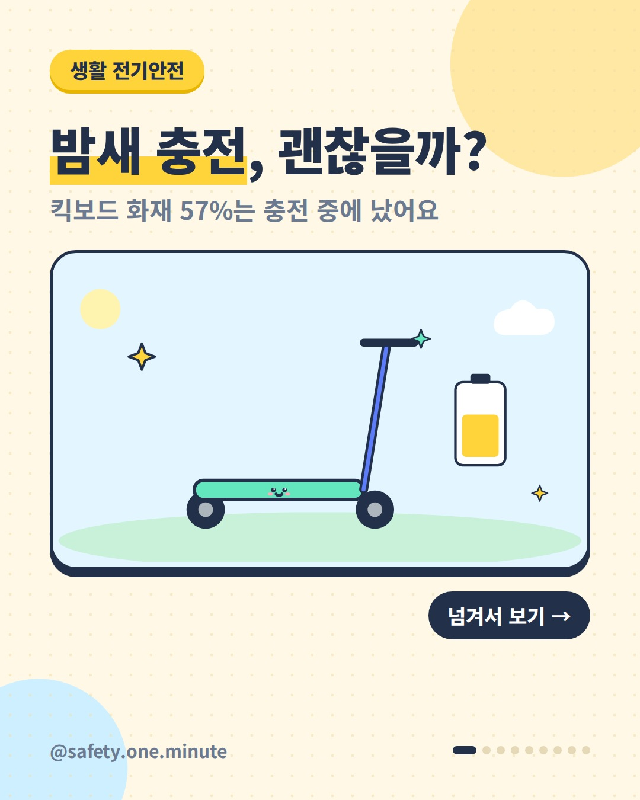
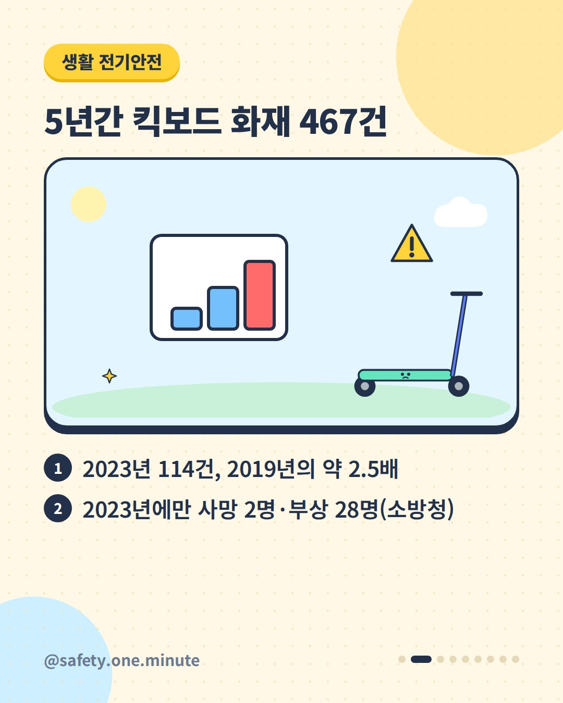
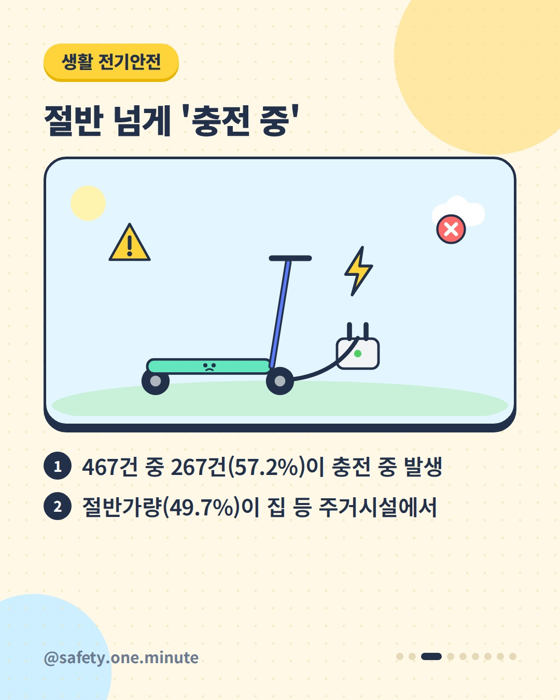
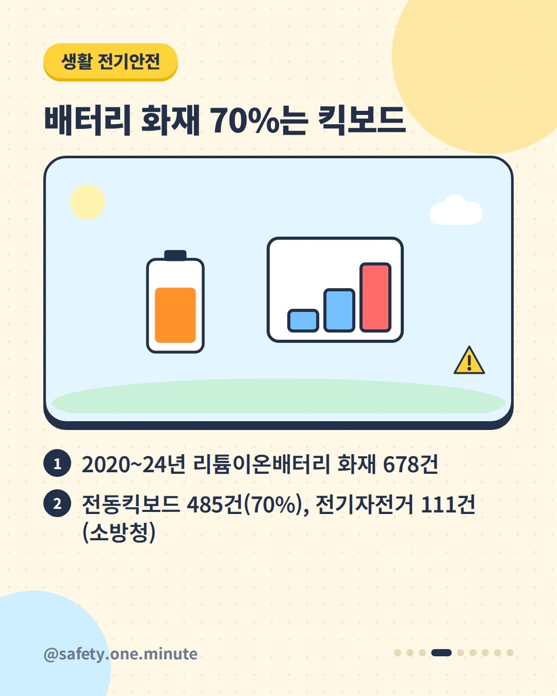
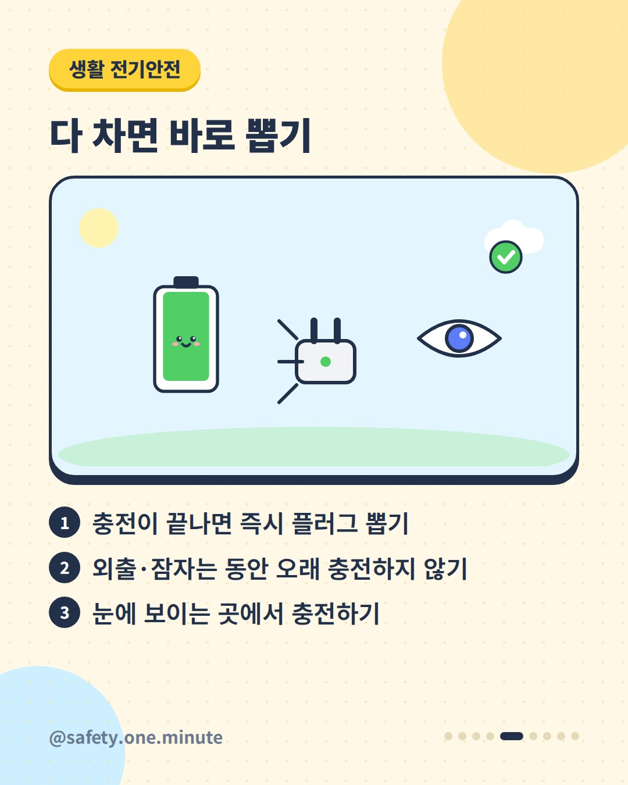
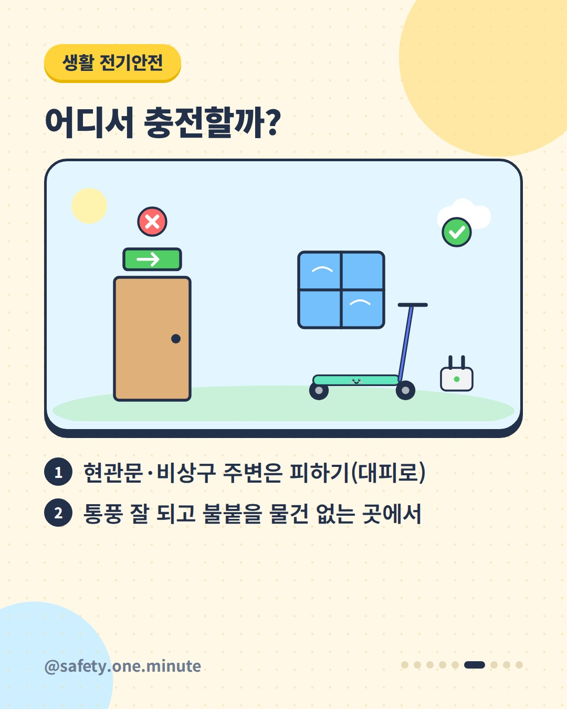
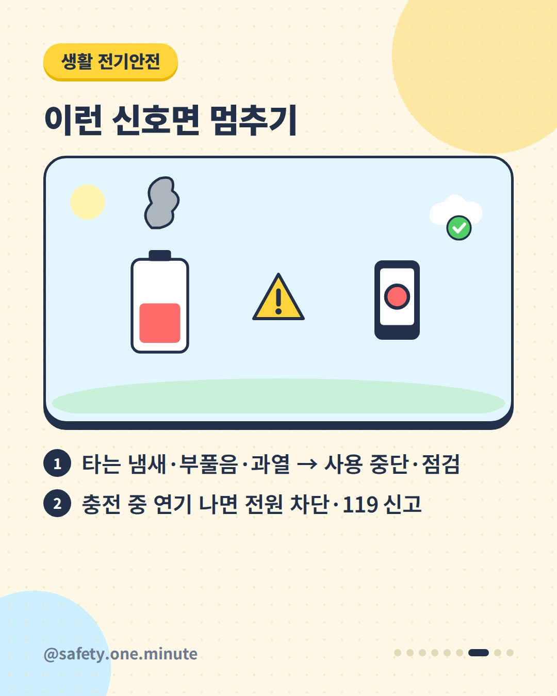
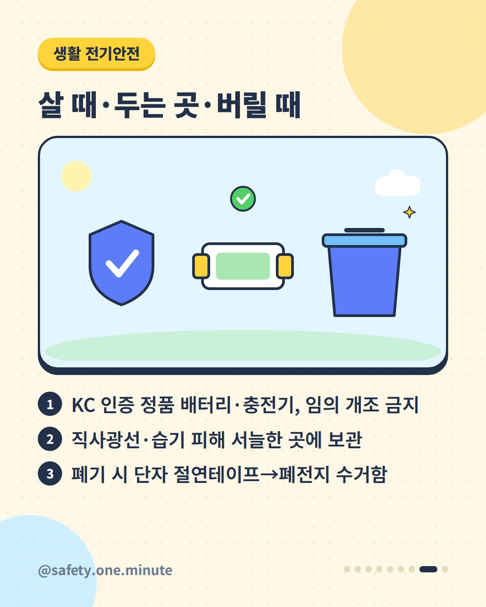
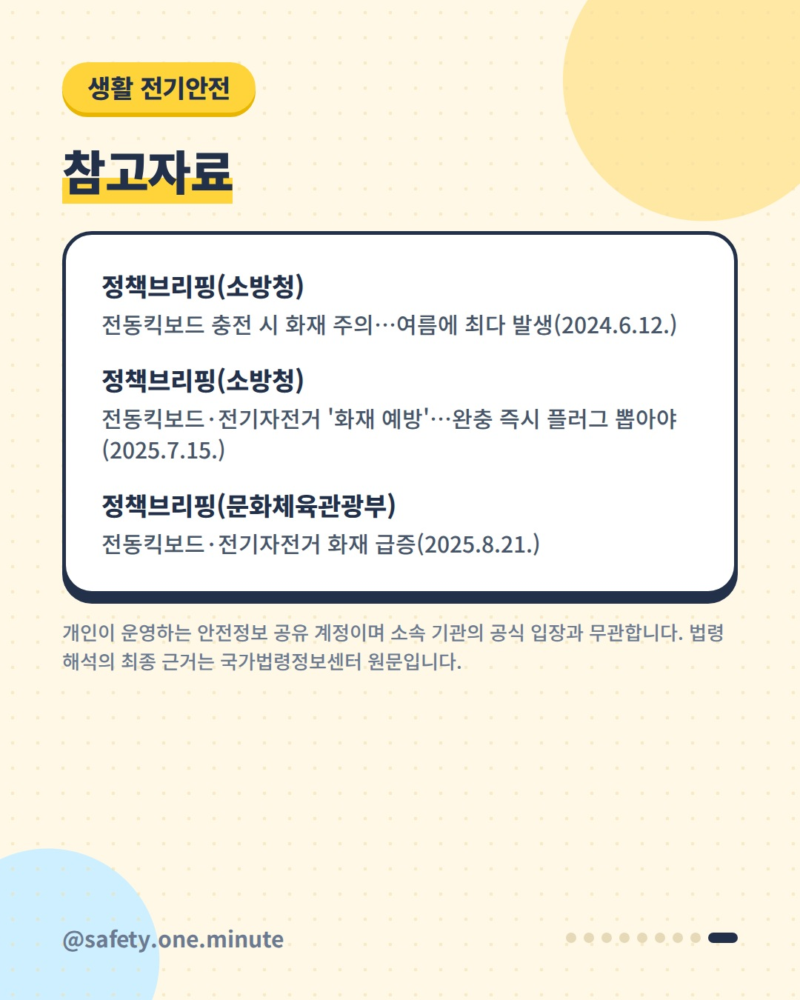

밤새 충전, 괜찮을까? — 9장 (4:5)









캡션
전동킥보드, 자기 전에 꽂아 두고 아침까지 충전하시나요? 소방청에 따르면 최근 5년간 전동킥보드 화재는 467건이었고, 이 중 57.2%(267건)가 충전 중에 났습니다. 2020~2024년 리튬이온배터리 화재 678건 가운데 70%(485건)도 전동킥보드였습니다. 이것만 지켜 주세요. ① 충전이 끝나면 바로 플러그 뽑기, 외출·잠자는 동안 오래 충전하지 않기 ② 눈에 보이는 곳, 통풍이 잘 되고 불붙을 물건이 없는 곳에서 충전 — 현관문·비상구 주변은 피하기 ③ 타는 냄새·부풀음·과열이 있으면 사용을 멈추고 점검, 충전 중 연기가 나면 전원 차단 후 119 ④ KC 인증 정품 배터리·충전기 사용, 출력을 높이는 임의 개조 금지 ⑤ 직사광선·습기를 피해 서늘한 곳에 보관, 버릴 땐 단자를 절연테이프로 감싸 폐전지 수거함에 출처: - 소방청 – 전동킥보드 충전 화재 통계·수칙(2024), 리튬이온배터리 화재 예방(2025) - 문화체육관광부 – 전동킥보드·전기자전거 화재 급증(2025) 개인이 운영하는 안전정보 공유 계정이며 소속 기관의 공식 입장과 무관합니다. 법령 해석의 최종 근거는 국가법령정보센터 원문입니다. #전동킥보드 #전기자전거 #배터리화재 #충전안전 #화재예방 #생활안전